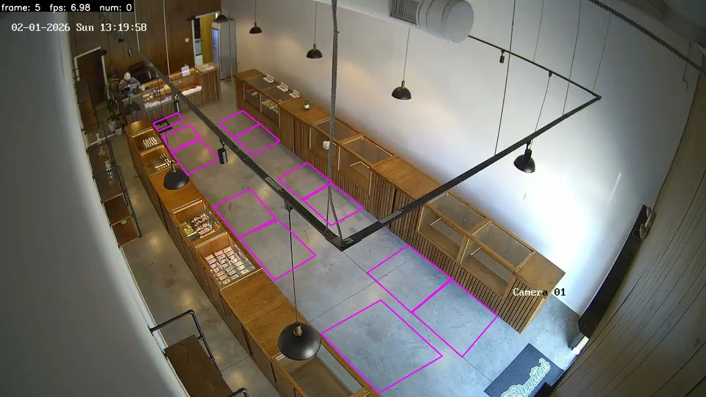

ACTUAL PROJECT OUTPUTThe problem
Detections alone do not describe a shopper's movement through a store. Useful analysis requires identities across frames and an association between tracks and the store's spatial layout.
My contribution
I built a retail-video analytics proof of concept, experimented with tracking methods, connected tracks to zones, and developed shelf/rack segmentation and polygon-cleanup logic.
What I delivered
- Detection/tracking overlays and structured trajectory outputs for downstream analysis.
- Track-to-zone association using configured shelf and region polygons.
- SAM3-assisted shelf/rack segmentation with custom geometry and polygon cleanup for ROI mapping.
Engineering decisions
- Evaluate tracking behavior on retail footage rather than relying only on frame-level detections.
- Keep track identity and spatial zone association explicit in the output.
- Combine segmentation masks with application-specific geometry to build useful region boundaries.
Outcome & scope
A working multi-video client POC with demonstrable tracking and zone association, plus an automatic ROI-mapping workstream.
This is a proof of concept. No store-wide production KPI, identity accuracy, or commercial deployment result is claimed.
Skills strengthened
The work reinforced the importance of temporal consistency and geometry: model outputs need spatial and application logic before they become useful analytics.